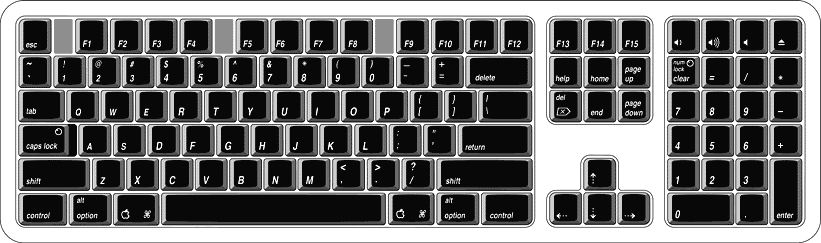

| PATH |

There are localized versions of the Apple Pro Keyboard for
use in different parts of the world. The three standards used are
ANSI (US and North America), JIS (Japan), and ISO (Europe). Figure 3-4 shows
the keyboard layout for the ANSI keyboard. Applications can determine
which type of keyboard is connected by calling the Gestalt Manager
and checking for the corresponding value of the gestaltKeyboardType selector:
gestaltUSBAndyANSIKbd (value
= 204)gestaltUSBAndyISOKbd (value
= 205)gestaltUSBAndyJISKbd (value
= 206)Figure 3-4 ANSI keyboard layout
